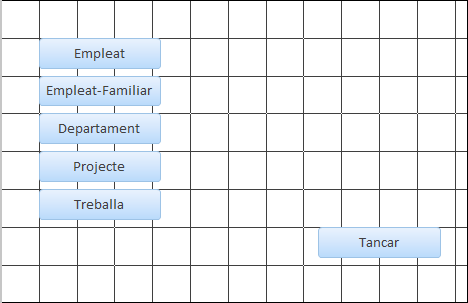

2.2 Accions múltiples
Es pot especificar més d'una acció en una macro. Només s'han de posar en línies consecutives (apretem a + Agregar nueva accion que hi ha baix de l'acció anterior), i s'executaran en l'ordre definit.
Per exemple podem modificar la macro Salutació per a que mostre desprès del missatge "Hola" un altre missatge: "Què tal?". I podem fer al principi de la macro que mostre un rellotge d'arena en el cursor (l'acció és MostrarCursorDeRelojDeArena, i en versions anterior es deia senzillament RelojDeArena). Observeu que per a recol·locar les accions tenim les fletxes verdes de pujar i baixar a la dreta de cada acció.
Exercici 2.5
Col·locar un altre botó amb el títol Tancar per a tancar el formulari "Botons", avisant primer que es va a tancar per mig d'un quadre de missatge que diga "Va a tancar-se aquest formulari". L'acció de tancar es diu "CerrarVentana", i si no s'especifica res, tancarà l'objecte actual (el formulari actual). La macro ha de ser independent i s'ha de dir Tancar.
Exercici 2.6
-
Crear un formulari per a Empleat (l'únic que ens queda), per mig de l'opció "Autoformulario", que en Access 2013 es fa seleccionant la taula Empleat i anant a Crear → Formulario. Deixeu-lo amb el nom Empleat.
-
Crear un nou formulari (en blanc) anomenat "Menú Principal". Posar un botó de tancar el formulari com el de l'exercici anterior, aprofitant la mateixa macro, ja que és independent.
-
Crear un altre botó per anar al formulari "Empleat". L'acció serà "AbrirFormulario" i evidentment en els paràmetres s'ha de posar (o triar) el nom del formulari que volem obrir: Empleat. La macro ha de ser independent, i s'ha d'anomenar "Obrir Formularis".
- Crear 4 botons més, que posteriorment serviran per a anar a tots els formularis. L'aspecte podria ser aquest

Nota
El paràmetre Modo de la ventana indica de quina manera s'obrirà el formulari (en aquest cas Empleat). Les més interessants són:
- Normal: obrirà el formulari en una nova pestanya. Podem tornar a l'original (Menú principal) i anar alternant entre les pestanyes obertes.
- Diàleg: obrirà el formulari en una finestra, i fins que no la tanquem (en aquest cas el formulari Empleat) no podrem fer res més en Access
Anem a triar el mode Diàleg, encara que en el punt següent es tornarà a plantejar el tema.
Nota
Aquest exercici no utilitza realment accions múltiples. És senzillament un exercici de preparació per al que ve després.
Llicenciat sota la Llicència Creative Commons Reconeixement NoComercial SenseObraDerivada 2.5